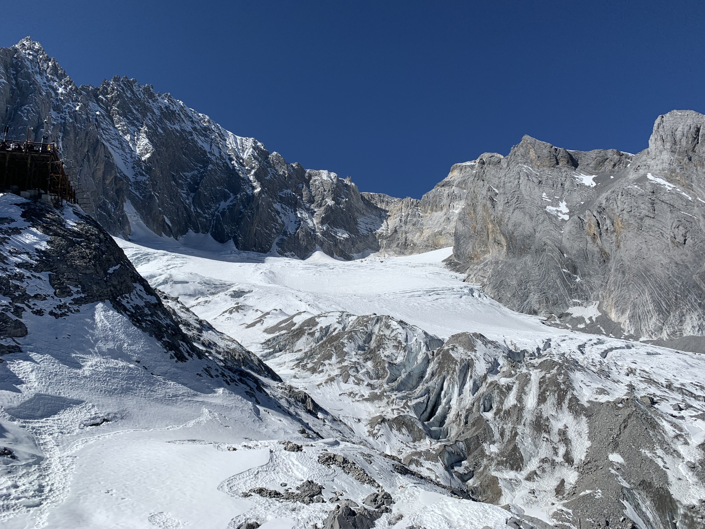
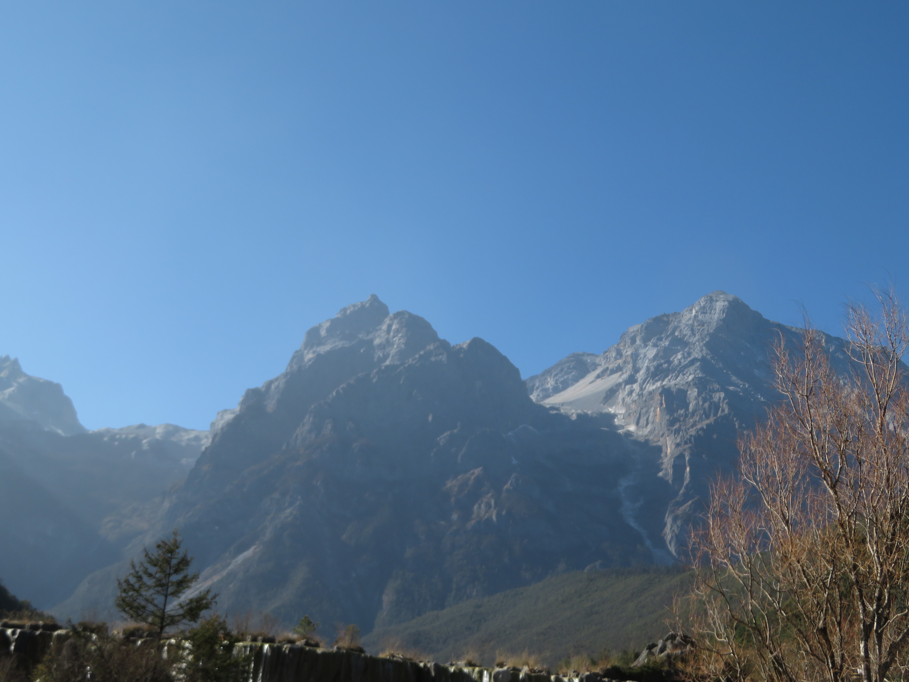
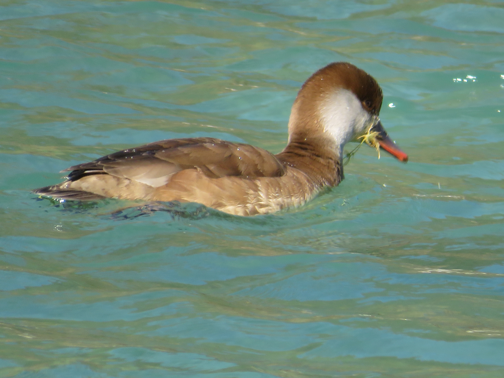
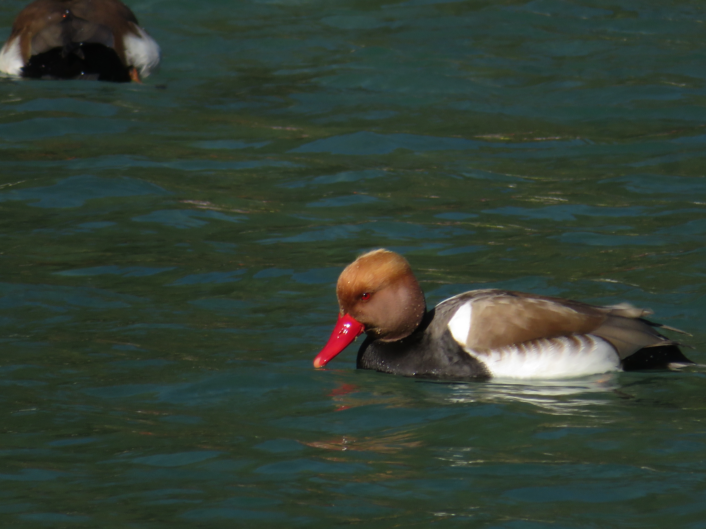

Base of Mt. Yulong

Glacier Park
Jade Dragon Snow Mountain, also known as Yulong Snow Mountain, is one of the most awesome adventure destinations not just in China, but in the entire world. Located in the Yunnan Province just north of the town of Lijiang, from the snowy mountain itself and the gorgeous alpine valley below, Mt. Yulong is one of the crown jewels of the province and one of my favorite places I've visited in all of China.
Base of Mt. Yulong
Glacier Park
The Glacier Park in Yulong Snow Mountain is home to some of the highest elevation viewpoints in the entire world. Located between 4500-4680 meters above sea level, Glacier Park is accessible by cable car and is absolutely stunning, bringing some of the greatest and craziest mountain views I've ever witnessed.

Yulong Summit

Final Glacier View

Mountainside
The beautiful Blue Moon Valley right below Jade Dragon Snow Mountain is also fantastic. Not only do you get crazy good views of the massive mountain, the lakes of Blue Moon Valley have a magical turquoise hue fits perfectly with the gorgeous scenery. I also go to see plenty of stunning Common Pochard Ducks with their beautiful plumage and red beaks.

Mt. Yulong from the Valley

Turquoise Lakes

Common Pochard Ducks

Common Pochard Ducks

Common Pochard Ducks

Common Pochard Ducks

Common Pochard Ducks

Common Pochard Ducks